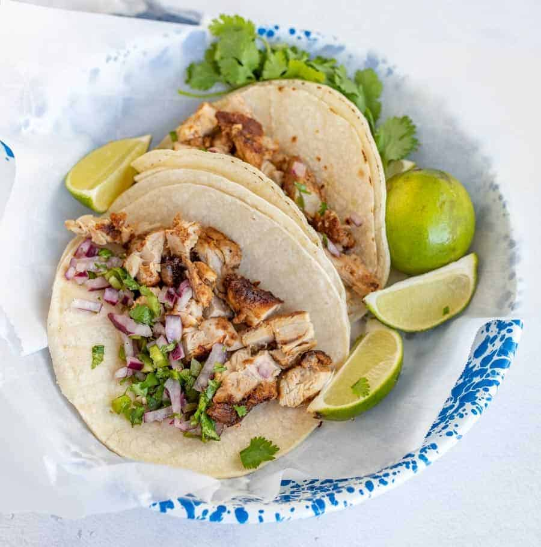

Chicken Tacos
Juicy chicken, warm tortillas, and your favorite fresh toppings.
View recipe
Ingredients
chicken, tortillas, tomatoes, onion, lime
- Dice the chicken and season with salt, pepper, and taco seasoning.
- Cook chicken in a lightly oiled skillet until it reaches 165°F (74°C).
- Warm the tortillas, fill with chicken, and top with chopped tomatoes, onion, and lime.